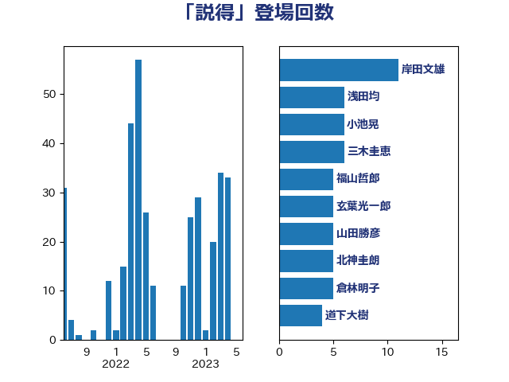

単語「説得」

| 階猛 | 立憲民主党 | 10 回 |
| 玄葉光一郎 | 立憲民主党 | 8 回 |
| 松沢成文 | 日本維新の会 | 7 回 |
| 茂木敏充 | 自由民主党 | 7 回 |
| 宮本徹 | 日本共産党 | 6 回 |
| 小池晃 | 日本共産党 | 6 回 |
| 枝野幸男 | 立憲民主党 | 6 回 |
| 吉良州司 | 無所属 | 5 回 |
| 山下芳生 | 日本共産党 | 5 回 |
| 有村治子 | 自由民主党 | 5 回 |
| 田嶋要 | 立憲民主党 | 5 回 |
| 田村憲久 | 自由民主党 | 5 回 |
| たがや亮 | れいわ新選組 | 4 回 |
| 倉林明子 | 日本共産党 | 4 回 |
| 北神圭朗 | 無所属 | 4 回 |
| 小沼巧 | 立憲民主党 | 4 回 |
| 山田勝彦 | 立憲民主党 | 4 回 |
| 末松義規 | 立憲民主党 | 4 回 |
| 本村伸子 | 日本共産党 | 4 回 |
| 武田良太 | 自由民主党 | 4 回 |
| 足立康史 | 日本維新の会 | 4 回 |
| 上田清司 | 国民民主党 | 3 回 |
| 井上哲士 | 日本共産党 | 3 回 |
| 塩村あやか | 立憲民主党 | 3 回 |
| 山口壯 | 自由民主党 | 3 回 |
| 斉藤鉄夫 | 公明党 | 3 回 |
| 林芳正 | 自由民主党 | 3 回 |
| 福島みずほ | 社会民主党 | 3 回 |
| 萩生田光一 | 自由民主党 | 3 回 |
| 音喜多駿 | 日本維新の会 | 3 回 |
| 伊藤孝江 | 公明党 | 2 回 |
| 古賀友一郎 | 自由民主党 | 2 回 |
| 吉田統彦 | 立憲民主党 | 2 回 |
| 大塚耕平 | 国民民主党 | 2 回 |
| 寺田静 | 無所属 | 2 回 |
| 小泉進次郎 | 自由民主党 | 2 回 |
| 小西洋之 | 立憲民主党 | 2 回 |
| 山井和則 | 立憲民主党 | 2 回 |
| 山崎正恭 | 公明党 | 2 回 |
| 山添拓 | 日本共産党 | 2 回 |
| 川田龍平 | 立憲民主党 | 2 回 |
| 打越さく良 | 立憲民主党 | 2 回 |
| 松原仁 | 立憲民主党 | 2 回 |
| 森山浩行 | 立憲民主党 | 2 回 |
| 水岡俊一 | 立憲民主党 | 2 回 |
| 猪口邦子 | 自由民主党 | 2 回 |
| 玉木雄一郎 | 国民民主党 | 2 回 |
| 石垣のりこ | 立憲民主党 | 2 回 |
| 福山哲郎 | 立憲民主党 | 2 回 |
| 稲富修二 | 立憲民主党 | 2 回 |
| 若林健太 | 自由民主党 | 2 回 |
| 谷田川元 | 立憲民主党 | 2 回 |
| 赤羽一嘉 | 公明党 | 2 回 |
| 逢坂誠二 | 立憲民主党 | 2 回 |
| 道下大樹 | 立憲民主党 | 2 回 |
| 高橋千鶴子 | 日本共産党 | 2 回 |
| 高良鉄美 | 無所属 | 2 回 |
| 麻生太郎 | 自由民主党 | 2 回 |
| 中島克仁 | 立憲民主党 | 1 回 |
| 中谷一馬 | 立憲民主党 | 1 回 |
| 串田誠一 | 日本維新の会 | 1 回 |
| 井上貴博 | 自由民主党 | 1 回 |
| 伊藤孝恵 | 国民民主党 | 1 回 |
| 伴野豊 | 立憲民主党 | 1 回 |
| 前原誠司 | 国民民主党 | 1 回 |
| 務台俊介 | 自由民主党 | 1 回 |
| 勝部賢志 | 立憲民主党 | 1 回 |
| 吉田はるみ | 立憲民主党 | 1 回 |
| 吉田豊史 | 日本維新の会 | 1 回 |
| 國重徹 | 公明党 | 1 回 |
| 大串博志 | 立憲民主党 | 1 回 |
| 大西健介 | 立憲民主党 | 1 回 |
| 守島正 | 日本維新の会 | 1 回 |
| 安達澄 | 無所属 | 1 回 |
| 室井邦彦 | 日本維新の会 | 1 回 |
| 宮本岳志 | 日本共産党 | 1 回 |
| 小川淳也 | 立憲民主党 | 1 回 |
| 小田原潔 | 自由民主党 | 1 回 |
| 小野泰輔 | 日本維新の会 | 1 回 |
| 小野田紀美 | 自由民主党 | 1 回 |
| 山崎誠 | 立憲民主党 | 1 回 |
| 山本剛正 | 日本維新の会 | 1 回 |
| 川合孝典 | 国民民主党 | 1 回 |
| 平沢勝栄 | 自由民主党 | 1 回 |
| 後藤祐一 | 立憲民主党 | 1 回 |
| 後藤茂之 | 自由民主党 | 1 回 |
| 徳永エリ | 立憲民主党 | 1 回 |
| 志位和夫 | 日本共産党 | 1 回 |
| 斎藤嘉隆 | 立憲民主党 | 1 回 |
| 新藤義孝 | 自由民主党 | 1 回 |
| 村井英樹 | 自由民主党 | 1 回 |
| 柚木道義 | 立憲民主党 | 1 回 |
| 柴田巧 | 日本維新の会 | 1 回 |
| 梅村聡 | 日本維新の会 | 1 回 |
| 梶山弘志 | 自由民主党 | 1 回 |
| 森本真治 | 立憲民主党 | 1 回 |
| 横山信一 | 公明党 | 1 回 |
| 櫻井周 | 立憲民主党 | 1 回 |
| 江田憲司 | 立憲民主党 | 1 回 |
| 泉健太 | 立憲民主党 | 1 回 |
| 浜地雅一 | 公明党 | 1 回 |
| 浜野喜史 | 国民民主党 | 1 回 |
| 海江田万里 | 立憲民主党 | 1 回 |
| 渡辺周 | 立憲民主党 | 1 回 |
| 湯原俊二 | 立憲民主党 | 1 回 |
| 牧山ひろえ | 立憲民主党 | 1 回 |
| 田村まみ | 国民民主党 | 1 回 |
| 田村智子 | 日本共産党 | 1 回 |
| 白石洋一 | 立憲民主党 | 1 回 |
| 矢倉克夫 | 公明党 | 1 回 |
| 石川香織 | 立憲民主党 | 1 回 |
| 石橋通宏 | 立憲民主党 | 1 回 |
| 石田昌宏 | 自由民主党 | 1 回 |
| 礒崎哲史 | 国民民主党 | 1 回 |
| 神谷裕 | 立憲民主党 | 1 回 |
| 福島伸享 | 無所属 | 1 回 |
| 福田昭夫 | 立憲民主党 | 1 回 |
| 紙智子 | 日本共産党 | 1 回 |
| 細野豪志 | 自由民主党 | 1 回 |
| 緑川貴士 | 立憲民主党 | 1 回 |
| 羽田次郎 | 立憲民主党 | 1 回 |
| 芳賀道也 | 国民民主党 | 1 回 |
| 菅義偉 | 自由民主党 | 1 回 |
| 菊田真紀子 | 立憲民主党 | 1 回 |
| 蓮舫 | 立憲民主党 | 1 回 |
| 西銘恒三郎 | 自由民主党 | 1 回 |
| 谷合正明 | 公明党 | 1 回 |
| 辻元清美 | 立憲民主党 | 1 回 |
| 重徳和彦 | 立憲民主党 | 1 回 |
| 野田佳彦 | 立憲民主党 | 1 回 |
| 野田聖子 | 自由民主党 | 1 回 |
| 金子恵美 | 立憲民主党 | 1 回 |
| 鈴木庸介 | 立憲民主党 | 1 回 |
| 鈴木義弘 | 国民民主党 | 1 回 |
| 鎌田さゆり | 立憲民主党 | 1 回 |
| 長妻昭 | 立憲民主党 | 1 回 |
| 青山繁晴 | 自由民主党 | 1 回 |
| 青柳仁士 | 日本維新の会 | 1 回 |
| 青柳陽一郎 | 立憲民主党 | 1 回 |
| 高市早苗 | 自由民主党 | 1 回 |